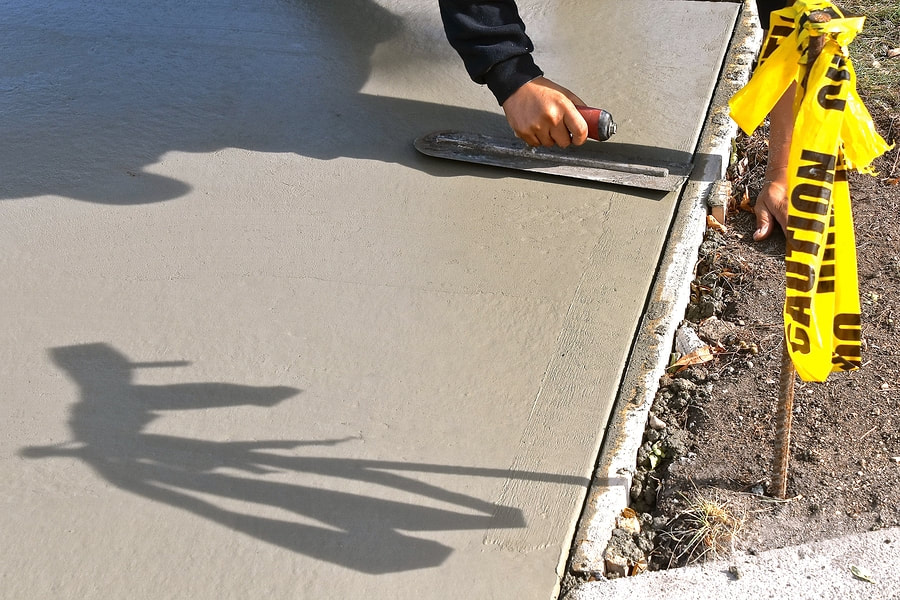
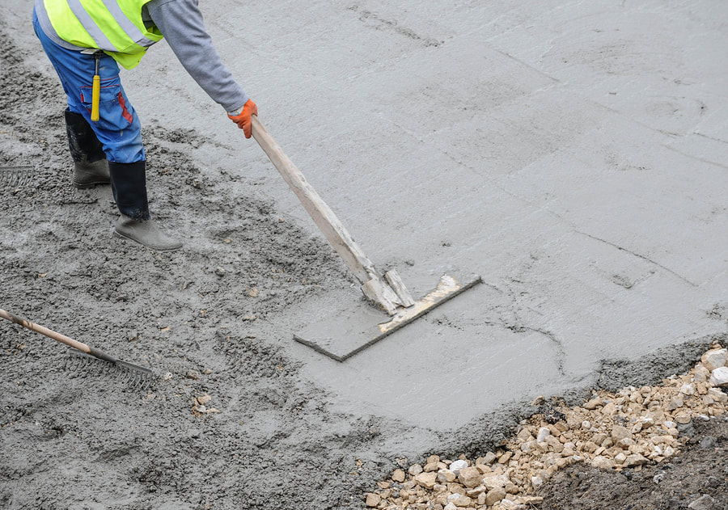

Concrete Installation
Concrete Installation Services in Youngstown, OH
At Youngstown Concrete Contractors, we offer concrete installation for residential and small commercial properties. From sidewalks and walkways to shed pads, driveway aprons, and parking pads, properly installed concrete provides durable surfaces for daily use.
Whether you're improving access around your home or planning a new flatwork project, we can help you explore solutions suited to the property's layout, use, and budget.
Get a free quote
Tell us the town, what you want poured or replaced, and a phone number. The form includes a source field so we know the lead came from Youngstown Concrete Contractors. Do not send payment information.


Residential & Commercial Concrete Installation
Concrete Sidewalks & Walkways
Walkways create convenient routes around homes and businesses. Proper grading, joint placement, and surface texture support function and accessibility. Decorative options include stamped and stained finishes.
Concrete Shed Pads
A stable, level pad can support an appropriate storage shed or outdoor structure. Dimensions, thickness, and reinforcement must match expected loads and manufacturer requirements.
Concrete Driveway Aprons
Aprons create transitions between driveways and adjacent surfaces. Elevation, drainage, and any public right-of-way requirements should be considered. Related to full driveway installation.
Concrete Parking Pads
Parking pads provide designated areas for cars, trailers, or other equipment. The design should reflect expected weight and traffic.
Small Commercial Concrete Projects
Concrete can be used for entry areas, pathways, and equipment pads, with requirements dependent on access, drainage, and traffic.
Why Proper Concrete Installation Matters
Site Preparation
A stable, properly prepared base reduces the risk of unwanted settlement.
Drainage & Grading
Good grading helps move water away from buildings and usable surfaces.
Concrete Thickness & Reinforcement
Specifications should reflect the intended use and expected loads.
Finishing & Control Joints
Texture helps determine traction, while joints help manage shrinkage cracking.
Concrete Replacement & Surface Improvements
Cracked, settled, or deteriorating surfaces may need replacement. A new installation offers opportunities to correct drainage, adjust dimensions, and upgrade finishes. Outdoor living spaces may also start with a concrete patio.
Frequently Asked Questions
How much does concrete installation cost?
Costs vary by dimensions, thickness, excavation, reinforcement, access, and finish. A site visit produces a written estimate for your project.
How thick should a concrete pad be?
Many standard residential pads are about four inches thick, but heavier loads and certain structures need different specifications. Tell us what will sit on the pad.
Can concrete be poured during winter?
Yes, in some conditions, with proper cold-weather procedures and curing protection. Scheduling depends on temperature and the protection plan.
How long does concrete take to cure?
Concrete often reaches its specified design strength at about 28 days; use timing depends on the project and conditions. Follow the installer directions before loading the slab.
Can concrete be installed over old concrete?
Some overlays are possible on stable existing slabs. Failed or moving concrete commonly needs removal.
Do I need a permit for concrete installation?
Requirements vary by municipality and project type, particularly near public sidewalks or roadways. We can discuss typical local expectations when we review the job.
Get a Free Concrete Installation Estimate
Contact Youngstown Concrete Contractors to discuss walkways, pads, aprons, and other flatwork.